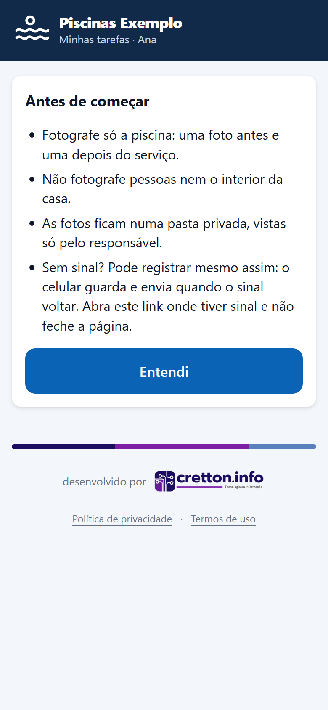
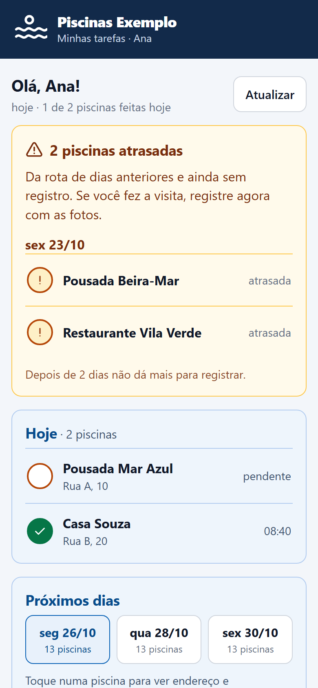
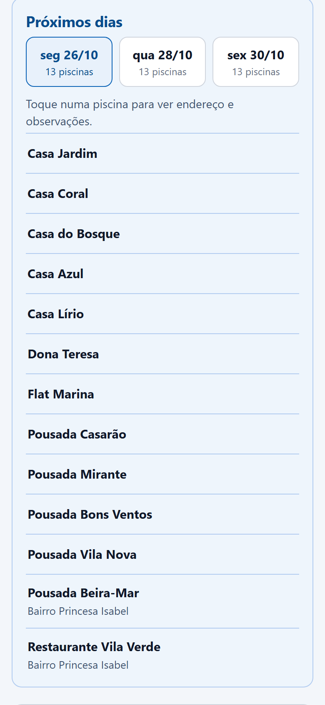
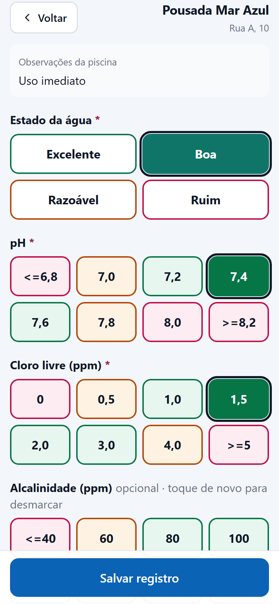
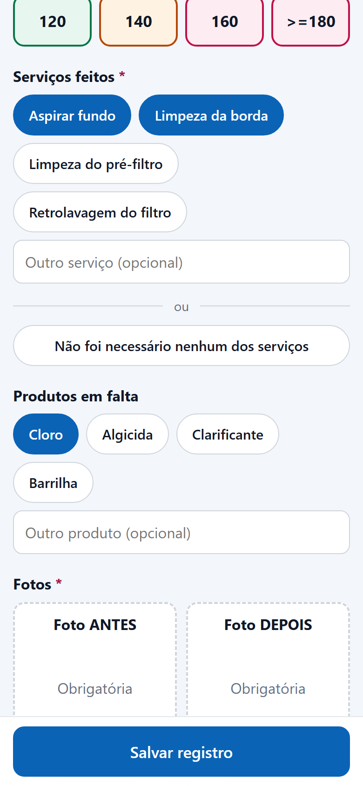
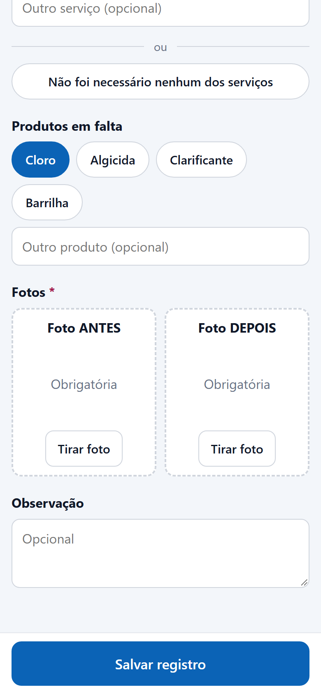
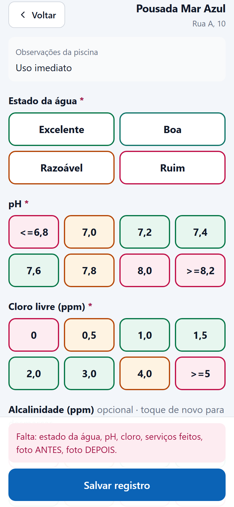

Início / Manutenção de piscinas / Manual do técnico
Registrar a visita em poucos toques
Seu link pessoal mostra as piscinas do dia. Em cada visita você marca a água, as medições e os serviços, tira duas fotos e salva. Funciona mesmo sem sinal.
Seu link
Você recebe um link pelo WhatsApp. Ele é só seu: não encaminhe para ninguém. Se ele for compartilhado por engano, avise o responsável, que gera outro.
- Abra no Chrome, não dentro do WhatsApp. No Chrome, toque nos três pontinhos e em Adicionar à tela inicial: o app fica com um ícone, como os outros.
- Na primeira vez aparece o aviso Antes de começar. Fotografe só a piscina, sem pessoas e sem o interior da casa, e toque em Entendi.

Suas piscinas do dia
No topo aparece Minhas tarefas com o seu nome. Logo abaixo, quantas piscinas de hoje já estão feitas.
- Hoje: as piscinas da sua rota. Círculo vazio é pendente; verde com a hora é feita.
- Atrasadas (quadro amarelo): piscinas de dias anteriores ainda sem registro. Se você fez a visita, registre com as fotos. Depois de 2 dias não dá mais.
- Próximos dias: toque no dia para ver as piscinas, o endereço e as observações.
- Outra piscina (fora da rota): para registrar uma visita que não estava prevista para hoje.
- Atualizar busca a lista de novo, por exemplo depois de uma troca de responsável.


Registrar a visita
Toque na piscina. O formulário abre com o nome do cliente e, se houver, as observações da piscina.
- Estado da água, pH e cloro: um toque em cada. São obrigatórios.
- Alcalinidade é opcional. Tocou errado? Toque de novo para desmarcar.
- Serviços feitos: marque tudo o que você fez. Se não precisou de nenhum, toque em Não foi necessário nenhum dos serviços. Fez algo fora da lista? Escreva em Outro serviço.
- Produtos em falta: marque o que acabou ou está no fim. O responsável recebe a lista para repor.
- Fotos: uma antes e uma depois do serviço. A câmera abre sozinha.
- Observação, se quiser, e Salvar registro.
As cores dos botões ajudam: verde está dentro da faixa, laranja pede atenção e vermelho está fora. Medida fora da faixa aparece como alerta para o responsável, mas salva normalmente.



Se faltar alguma coisa
Ao tocar em Salvar registro, o app confere o que é obrigatório. Se faltar algo, aparece no rodapé a lista do que preencher, por exemplo Falta: pH, serviços feitos, foto ANTES. Complete e salve de novo.

Sem sinal
Pode registrar mesmo sem internet. O registro fica guardado no celular e é enviado sozinho quando o sinal voltar. Na lista, a piscina aparece como aguardando sinal.
- Deixe a página aberta até enviar, principalmente se abriu pelo WhatsApp: o navegador dele pode apagar o que estava guardado ao fechar.
- Se aparecer Tentar de novo, toque quando estiver com sinal.
- A hora que vale é a da visita, mesmo que o envio aconteça depois.
Dúvidas
Piscina errada na sua lista, cliente novo ou troca de dia: fale com o responsável. Ele ajusta a escala e a sua lista muda na hora.
As telas deste manual usam dados fictícios. Os nomes de empresa, clientes e técnicos não são reais.